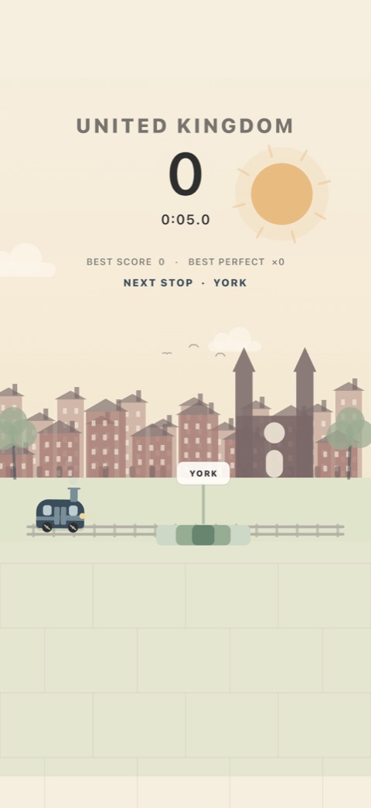
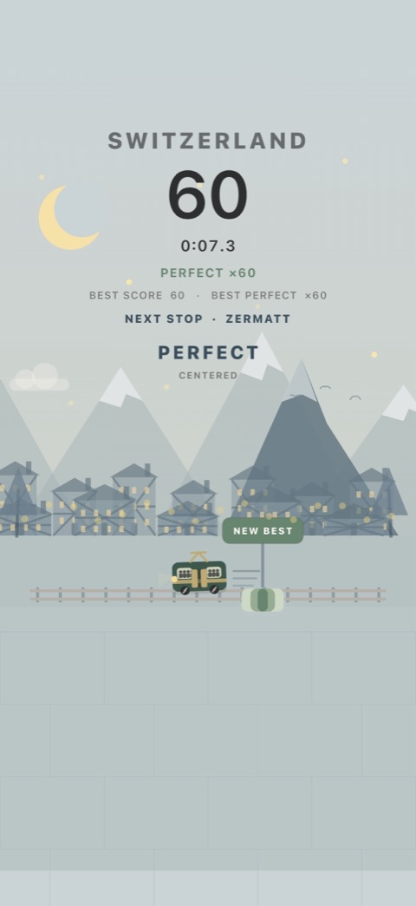
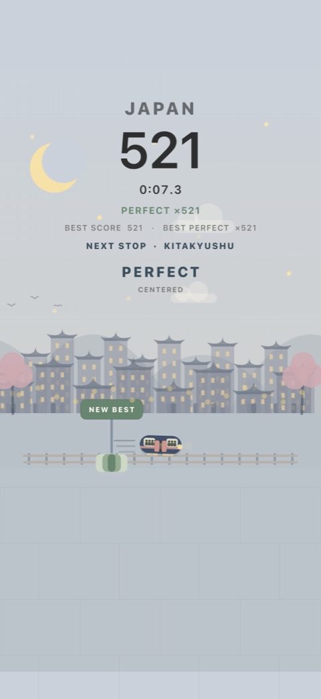

An offline train timing game
Pocket Railway
One tap. One perfect stop.
Tap when your train reaches the station target. Chase a perfect streak, watch the scenery change and let calm lo-fi music carry you to the next stop.
Download on the App StoreFree to play on iPhone and iPad. No ads or in-app purchases.
Android release coming to Google Play.
Easy to start. Hard to master.
One tap stops the train. Land inside the target to keep going. Every arrival makes the next stop faster and tighter. Miss, retry, and go again.
A little world to discover.
Travel from city streets to Alpine scenery and Japanese stations. Your train evolves from steam to maglev as your score climbs.
Your own quiet carriage.
Pick from 12 soothing lo-fi tracks. Play offline on your commute or during a break. Music, effects and haptics have separate controls.
Actual gameplay
Every stop takes you somewhere.
Build your perfect streak, explore World Journey and discover the trains in your museum. Your local Top 5 keeps your best runs ready to share.



Before you board.
How do you play Pocket Railway?
Tap anywhere when the center of your train is inside the highlighted station target. GOOD, GREAT and PERFECT stops all add one point. A PERFECT builds your streak. A miss or an empty timer ends the run, and Retry starts another immediately.
Can I play without Wi-Fi or an account?
Yes. The core train game, music and local high scores work offline without an account. Sharing through other apps may require a connection. Features can vary by installed version.
Is it available for iPhone, iPad and Android?
Pocket Railway is available on the App Store for iPhone and iPad. The Android release is coming to Google Play. The game interface is currently in English.
Are there ads or in-app purchases?
No. The current release has no ads or in-app purchases. There are no energy systems or paid retries.
Can I choose the music?
Yes. Choose from 12 lo-fi tracks, including Rain on Glass, Amber Fields and Sunday Tram. You can turn music off independently of sound effects and haptics.
Does the train game get harder?
Yes. Speed rises and the target becomes narrower as your score increases. Reach 600 stops to unlock the secret Arc Line, a semicircular route.
Your next perfect stop is waiting.
Short runs, instant retries, and a whole journey ahead.
Play Pocket Railway